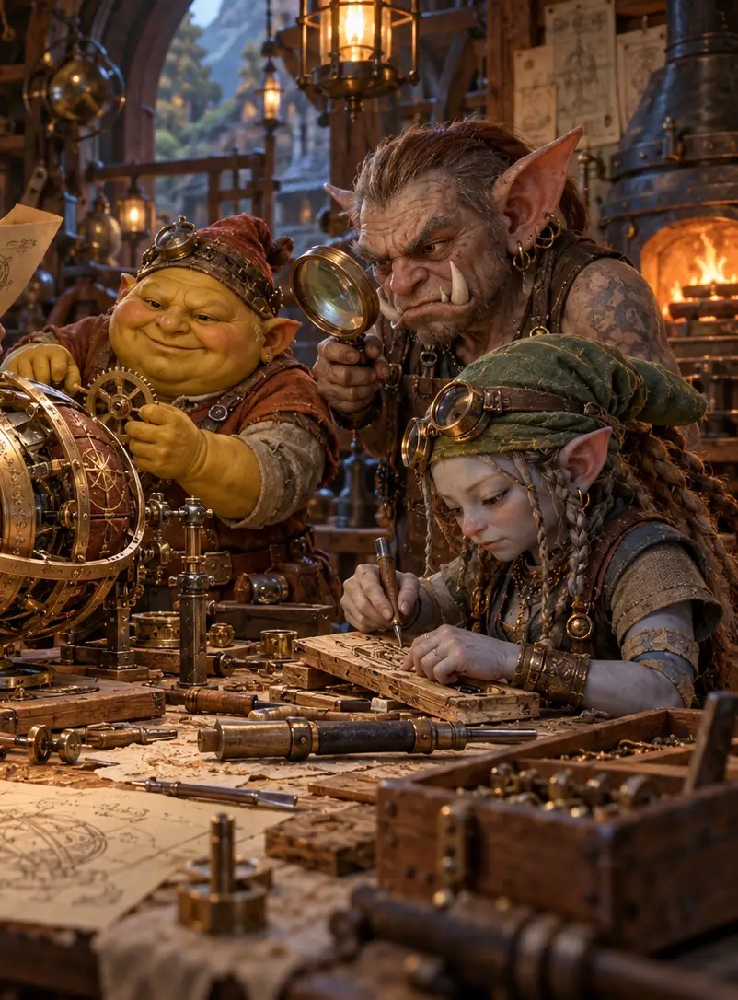

The Gnome Workshop
Meet master crafters from all four gnome races. Discover curious inventions, traditional skills and the secrets of gnome craftsmanship.
The Gnome Workshop
12 November · 10:00–16:00
For centuries, gnome craftsmanship has remained one of the world's most underappreciated traditions. From intricate mechanical devices to surprisingly practical household inventions, gnomes have developed an extraordinary range of skills, often without receiving the recognition they deserve.
Join master craftsmen and craftswomen from all four gnome races as they demonstrate their techniques, share their knowledge and occasionally disagree about whose methods are superior.

What to expect
- Live demonstrations of traditional gnome engineering
- An exhibition of unusual tools and ingenious inventions
- Hands-on workshops for visitors of all ages
- Conversations with some of the most accomplished gnome artisans
Visitors are encouraged to ask questions, examine the exhibits and participate in selected activities. Please refrain from operating unfamiliar machinery without supervision.
Admission: Included with Expo ticket. Workshop places are limited.